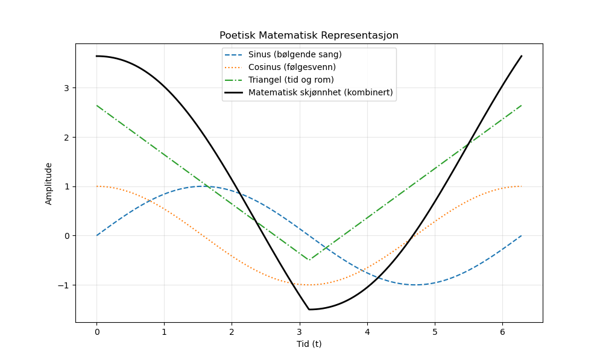

Dagens dikt
I tåken danser tallenes lek,
Fra null til uendelig trekker vi steg.
Triangler glir gjennom tid og rom,
Kalidoskop av matte, et evig tom.
Sinus synger sin bølgende sang,
Cosinus følger, en venn så lang.
Med ekko fra evigheten, ruller de på,
Matematisk skjønnhet i strake små slå.
Hva er en sirkel, hva er en linje?
Alt tegner mønstre som hodet vil minne.
Universets språk, med funn og skjulte tegn,
Python maler alt i et diagram som regn.

Kode
import numpy as np
import matplotlib.pyplot as plt
# Generer data for sinus og cosinus som symboliserer bølgende sangen
x = np.linspace(0, 2 * np.pi, 1000)
sin_wave = np.sin(x)
cos_wave = np.cos(x)
# Generer data for triangler glir i rommet
triangle_wave = np.abs(np.mod(x, 2*np.pi) - np.pi) - 0.5
# Kombiner bølger i en matematisk symfonisk diagram
combined_wave = sin_wave + cos_wave + triangle_wave
# Lag en plot av diktets matematisk representasjon
plt.figure(figsize=(10, 6))
plt.plot(x, sin_wave, label="Sinus (bølgende sang)", linestyle='--')
plt.plot(x, cos_wave, label="Cosinus (følgesvenn)", linestyle=':')
plt.plot(x, triangle_wave, label="Triangel (tid og rom)", linestyle='-.')
plt.plot(x, combined_wave, label="Matematisk skjønnhet (kombinert)", color='black', linewidth=2)
plt.title("Poetisk Matematisk Representasjon")
plt.xlabel("Tid (t)")
plt.ylabel("Amplitude")
plt.legend()
plt.grid(alpha=0.3)
plt.savefig('2025-03-20-20-01-30.png')